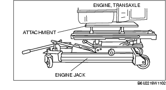
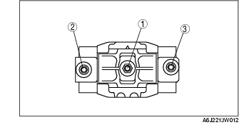

Engine removal/installation [ZY]
- • Fuel vapor is hazardous. It can very easily ignite, causing serious injury and damage. Always keep sparks and flames away from fuel.
- • Fuel line spills and leakage are dangerous. Fuel can ignite and cause serious injuries or death and damage. Fuel can also irritate skin and eyes. To prevent this, always complete the "Fuel Line Safety Procedure". (See BEFORE SERVICE PRECAUTION [ZY].)
1. Remove the battery and the battery bracket. (See BATTERY REMOVAL/INSTALLATION [ZY].)
2. Drain the engine coolant. (See ENGINE COOLANT REPLACEMENT [ZY].)
3. Disconnect the radiator hose.
4. Remove the air cleaner, intake-air duct, and vacuum hose. (See INTAKE-AIR SYSTEM REMOVAL/INSTALLATION [ZY].)
5. Remove the ATF hose, selector cable, and wiring harness. (ATX) (See AUTOMATIC TRANSAXLE REMOVAL/INSTALLATION [FN4A-EL].)
6. Remove the shift cable. (MTX) (See MANUAL TRANSAXLE REMOVAL/INSTALLATION [F35M-R].)
7. Remove the clutch release cylinder with the pipe still connected. (MTX) (See CLUTCH RELEASE CYLINDER REMOVAL/INSTALLATION.)
8. Remove the drive belt. (See DRIVE BELT REPLACEMENT [ZY].)
9. Remove the A/C compressor with the pipes still connected.
10. Drain the transaxle oil.
11. Remove the joint shaft. (See JOINT SHAFT REMOVAL/INSTALLATION.)
12. Disconnect the front drive shaft (LH) from the transaxle side. (See DRIVE SHAFT REMOVAL/INSTALLATION.)
13. Disconnect the vacuum hose and the heater hose.
14. Disconnect the fuel hose. (See BEFORE SERVICE PRECAUTION [ZY].) (See QUICK RELEASE CONNECTOR REMOVAL/INSTALLATION [ZY].)
15. Disconnect the wiring harness from the engine side.
16. Remove the front pipe. (See EXHAUST SYSTEM REMOVAL/INSTALLATION [ZY].)
17. Remove the front cross member component. (See FRONT CROSSMEMBER REMOVAL/INSTALLATION.)
18. Remove in the order indicated in the table.
19. Install in the reverse order of removal.
20. Start the engine. and inspect and adjust the following.
21. Inspect the following and adjust them if necessary.
- • Pulley and belt for runout and contact .
- • Leakage of engine oil, engine coolant, ATF, transaxle oil (MTX), and fuel.
- • Ignition timing and idle speed. Verify the amount of CO, HC. (See IGNITION TIMING INSPECTION [ZY].) (See IDLE SPEED ADJUSTMENT [ZY].) (See IDLE MIXTURE INSPECTION [ZY].)
- • Engine-driven accessories operation
22. Perform a road test and verify that there is no abnormal vibration or noise.

No.3 Engine Mount, No.4 Engine Mount Rubber Removal Note
1. Secure the engine and the transaxle using an engine jack and attachment.

No.3 Engine Mount, No.4 Engine Mount Rubber Installation Note
1. Secure the engine and the transaxle using an engine jack and attachment.

2. Install the No.3 engine mount, and then temporarily tighten the installation bolts and nuts.
3. Tighten the installation bolts in the order shown in the figure.

Tightening torque
4. Align the No.4 engine mount rubber in the direction shown in the figure, and then temporarily tighten the installation bolts and nuts.

5. Tighten the No.4 Engine mount rubber installation bolts and nuts in the order shown in the figure.

6. Remove the engine jack and attachment.